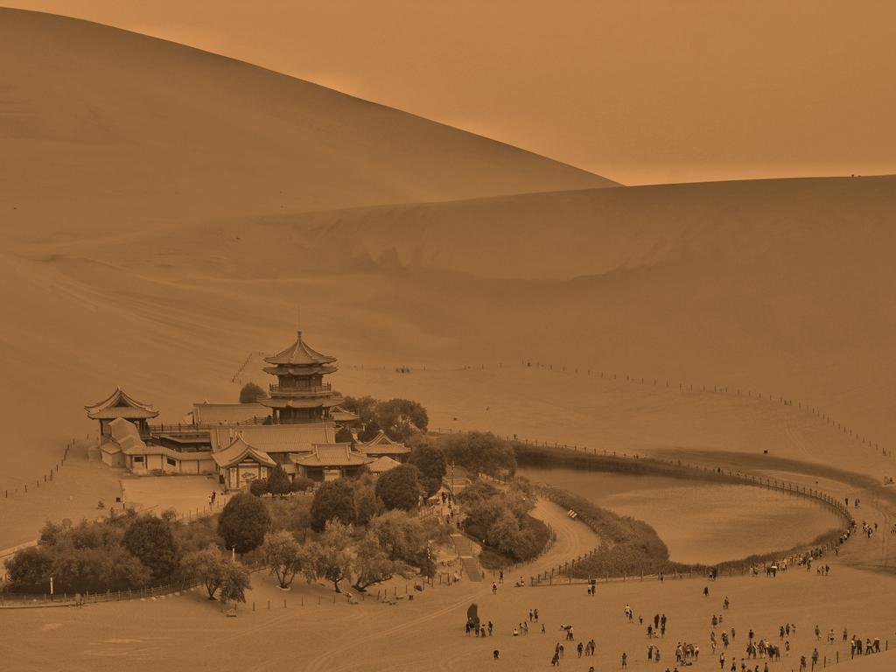

Zhao Jian · The Mirror Cave
观自在菩萨，行深般若波罗蜜多时，
照见五蕴皆空。
When Avalokiteśvara moved deep in the perfection of wisdom, he shone a light on the five aggregates and saw that all of them are empty.
— Heart Sūtra
建议佩戴耳机 · Headphones recommended
一座以莫高窟“覆斗顶”形制为原型的镜窟。西壁佛龛不塑佛像，只立一面铜镜；入洞之后，来路亦化为镜。两镜相照，窟中有窟，千窟千佛。镜中每深一层，时间便早一步；镜中每隔一层，色与空便互换一次。你在镜中找不到自己。
A cave modelled on the truncated-pyramid ceiling chambers of Mogao. The niche of the west wall holds no statue, only a bronze mirror; once you are inside, the doorway behind you becomes a mirror too. Two mirrors facing each other: caves within caves, a thousand caves, a thousand Buddhas. Each layer deeper into the mirror is a little earlier in time; every other layer swaps form for emptiness. You will not find yourself in it.
